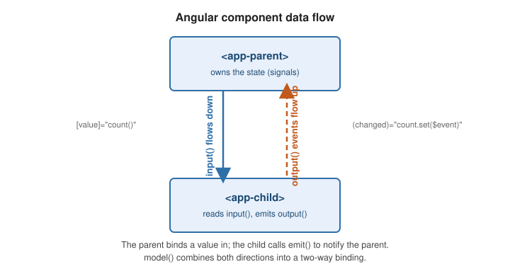

Component Communication
|
This content was generated with the assistance of AI and should be verified against the official documentation before being relied on in production. |
Components talk to each other through a small, one-directional contract: inputs carry data down from a
parent, outputs send events up to it, model() combines both for two-way binding, queries let a
component reach into its own view or projected content, and <ng-content> projects a parent’s markup into a
child.

Signal inputs
input() declares a read-only signal that Angular keeps in sync with the parent’s binding. input() gives
an optional default; input.required() has no default and the template binding is mandatory. alias renames
the binding; transform coerces the incoming value.
import { Component, input, booleanAttribute } from '@angular/core';
@Component({ selector: 'app-user-card', templateUrl: './user-card.html' })
export class UserCard {
readonly userId = input.required<string>(); // <app-user-card [userId]="id">
readonly title = input('Untitled'); // optional, default provided
readonly badge = input('', { alias: 'label' }); // bound as [label]
readonly disabled = input(false, { transform: booleanAttribute }); // "" / "true" -> true
}Read an input like any signal (this.userId()), and derive from it with computed():
readonly greeting = computed(() => `Hello, ${this.title()}`);|
The legacy pattern is the |
References: Accepting data with input properties and Signal inputs.
Outputs
output() returns an emitter; call .emit(value) to raise a custom event the parent binds with (name).
outputFromObservable() (from @angular/core/rxjs-interop) turns an Observable into an output.
import { Component, output } from '@angular/core';
import { outputFromObservable } from '@angular/core/rxjs-interop';
import { Subject } from 'rxjs';
@Component({ selector: 'app-rating', templateUrl: './rating.html' })
export class Rating {
readonly rated = output<number>(); // (rated)="onRated($event)"
private readonly hovers = new Subject<number>();
readonly hovered = outputFromObservable(this.hovers);
choose(stars: number): void {
this.rated.emit(stars);
}
}<app-rating (rated)="score.set($event)" (hovered)="preview.set($event)" />|
The legacy pattern is |
Reference: Custom events with outputs.
Two-way binding with model()
model() is a writable signal that is both an input and an implicit nameChange output, so a parent can
use the [(name)] banana-in-a-box syntax. Writing to the model signal in the child emits the change.
import { Component, model } from '@angular/core';
@Component({
selector: 'app-toggle',
template: `<button (click)="checked.set(!checked())">{{ checked() ? 'On' : 'Off' }}</button>`,
})
export class Toggle {
readonly checked = model(false); // input `checked` + output `checkedChange`
}<app-toggle [(checked)]="isOn" />
<!-- desugars to: -->
<app-toggle [checked]="isOn" (checkedChange)="isOn = $event" />The xChange naming convention (checked + checkedChange) is what makes any input/output pair usable with
[(x)]. Reference: Model inputs.
Queries
Queries retrieve child directives, components, or DOM elements. Signal queries are the modern form and
return signals; the decorator forms (@ViewChild / @ViewChildren / @ContentChild /
@ContentChildren) remain supported.
-
viewChild()/viewChildren()— elements in this component’s own template. -
contentChild()/contentChildren()— elements projected in through<ng-content>.
import { Component, ElementRef, viewChild, viewChildren, contentChildren } from '@angular/core';
import { Tab } from './tab';
@Component({ selector: 'app-tabs', templateUrl: './tabs.html' })
export class Tabs {
readonly search = viewChild<ElementRef<HTMLInputElement>>('search'); // #search in template
readonly panels = viewChildren(Panel); // Signal<readonly Panel[]>
readonly tabs = contentChildren(Tab); // projected <app-tab>s
focusSearch(): void {
this.search()?.nativeElement.focus();
}
}The decorator forms take options: { static: true } resolves the query before the first change detection
(only for children not inside @if / @for), and { read: ElementRef } selects which token to return from
the matched node.
@ViewChild('search', { static: true, read: ElementRef }) searchEl!: ElementRef<HTMLInputElement>;
@ContentChild(Tab) firstTab?: Tab;Signal queries need no static option — read them in an effect() or in ngAfterViewInit and they are
always current. References: Referencing component children with
queries and Signal queries.
Content projection
<ng-content> marks where a parent’s markup is rendered inside a child. A bare <ng-content> projects
everything; select="..." (a CSS selector) projects a matching subset for multi-slot projection.
Fallback content between the tags shows when nothing is projected into that slot.
<!-- card.html -->
<article class="card">
<header><ng-content select="[card-title]">Untitled</ng-content></header>
<div class="body"><ng-content /></div>
<footer><ng-content select="card-actions" /></footer>
</article><!-- usage -->
<app-card>
<h2 card-title>Invoice #42</h2>
<p>Amount due: {{ total() | currency }}</p>
<card-actions><button>Pay</button></card-actions>
</app-card>Projected nodes stay owned by the parent for change detection and are queried with contentChild() /
contentChildren(). Reference: Content projection.
Two behaviours surprise people. First, projected content is created by the parent whether or not the child renders
it: a component placed inside <app-panel> is constructed even when the panel’s <ng-content> sits inside an @if that
is currently false, so its constructor and injected services run and only its DOM stays unattached. Use @defer, or
ng-template with ngTemplateOutlet, for content that should not exist until it is shown. Second, select matches the
projected node’s own selector, so a wrapper element you cannot change can be steered into a slot with ngProjectAs:
<app-wrap>
<span ngProjectAs="h2">Title</span> <!-- lands in the <ng-content select="h2"> slot -->
<p>Everything else goes to the default slot.</p>
</app-wrap>Choosing a communication mechanism
Prefer the narrowest mechanism that works. Inputs and outputs make the data flow visible in the template and statically checked; a shared service is invisible in the template, so reach for it only when the components are not in a parent-child relationship, or when passing a value through several intermediate levels would add noise.
Deep dive: BookShelf’s book card
The BookCard component from Components becomes interactive in this version. It
takes the book and a discount, owns a two-way rating, and tells its parent when the user selects it:
import {
Component, ElementRef, booleanAttribute, computed, effect, input, model, numberAttribute, output, viewChild,
} from '@angular/core';
import { Book } from './book';
@Component({
selector: 'app-book-card',
template: `
<article>
<h3 #heading>{{ book().title }}</h3>
<p class="price">{{ priceLabel() }}</p>
<button class="star" type="button" (click)="rating.set(rating() + 1)">+</button>
<span class="rating">{{ rating() }}</span>
<button class="pick" type="button" (click)="selected.emit(book())" [disabled]="disabled()">Select</button>
</article>
`,
})
export class BookCard {
readonly book = input.required<Book>();
readonly discount = input(0, { transform: numberAttribute }); // discount="10" arrives as the number 10
readonly disabled = input(false, { transform: booleanAttribute }); // a bare `disabled` attribute means true
readonly rating = model(0); // input + ratingChange output
readonly selected = output<Book>();
readonly heading = viewChild<ElementRef<HTMLHeadingElement>>('heading');
readonly priceLabel = computed(() => (this.book().price * (1 - this.discount() / 100)).toFixed(2));
constructor() {
effect(() => console.log('showing', this.book().id)); // side effect: runs when book() changes
}
}The parent binds every kind of input in one tag. Note the difference between an attribute and a property binding:
discount="10" passes the string "10", which the numberAttribute transform converts, whereas [discount]="10"
passes the number directly and needs no conversion.
@Component({
selector: 'app-shelf',
imports: [BookCard],
template: `
@for (b of books; track b.id) {
<app-book-card [book]="b" discount="10" disabled [(rating)]="score" (selected)="picked.set($event)" />
}
<p>Selected: {{ picked()?.title ?? 'none' }}</p>
`,
})
export class Shelf {
readonly books = SAMPLE_BOOKS;
score = 2; // a plain field works with [(rating)]; a signal works too: [(rating)]="score"
readonly picked = signal<Book | null>(null);
}Here is what happens when the user clicks the + button in the card:
Reading and testing inputs, outputs, and queries
Reading book() before the parent has bound it throws NG0950 ("Input is required but no value is available yet"),
which is why the value should be read in a template, a computed(), or an effect() rather than in the constructor.
In a test, set inputs through the component ref — assigning component.book = ... does not work for signal inputs — and subscribe to the output to observe emissions:
it('emits the selected book', async () => {
const fixture = TestBed.createComponent(BookCard);
fixture.componentRef.setInput('book', SAMPLE_BOOKS[0]);
let got: Book | undefined;
fixture.componentInstance.selected.subscribe((b) => (got = b));
await fixture.whenStable();
expect(fixture.componentInstance.heading()?.nativeElement.textContent).toBe('Learning Angular');
(fixture.nativeElement as HTMLElement).querySelector<HTMLButtonElement>('.pick')!.click();
expect(got?.id).toBe('b1');
});Content queries and a shared service
contentChildren() lets a container react to what is projected into it. A minimal tab strip reads the label input of
each projected <app-tab> and renders the headers itself:
@Directive({ selector: 'app-tab' })
export class Tab {
readonly label = input.required<string>();
}
@Component({
selector: 'app-tabs',
template: `
<nav>@for (t of tabs(); track t.label()) { <a>{{ t.label() }}</a> }</nav>
<ng-content />
`,
})
export class Tabs {
readonly tabs = contentChildren(Tab); // Signal<readonly Tab[]>
}<app-tabs><app-tab label="Details" /><app-tab label="Reviews" /></app-tabs>When two components are not in a parent-child relationship — a list of cards and a detail panel in a different part of the page — a root-provided service with a signal is the lightest link. The card writes, the panel reads, and neither knows the other exists:
@Injectable({ providedIn: 'root' })
export class Selection {
readonly current = signal<Book | null>(null);
}
// in BookCard: inject(Selection).current.set(this.book());
// in BookDetail: protected readonly sel = inject(Selection); // template: {{ sel.current()?.title ?? 'nothing' }}The detail panel updates automatically because its template reads the signal. The trade-off is discoverability: there
is no [input] in a template to show where the data comes from, so keep such services small and well named.